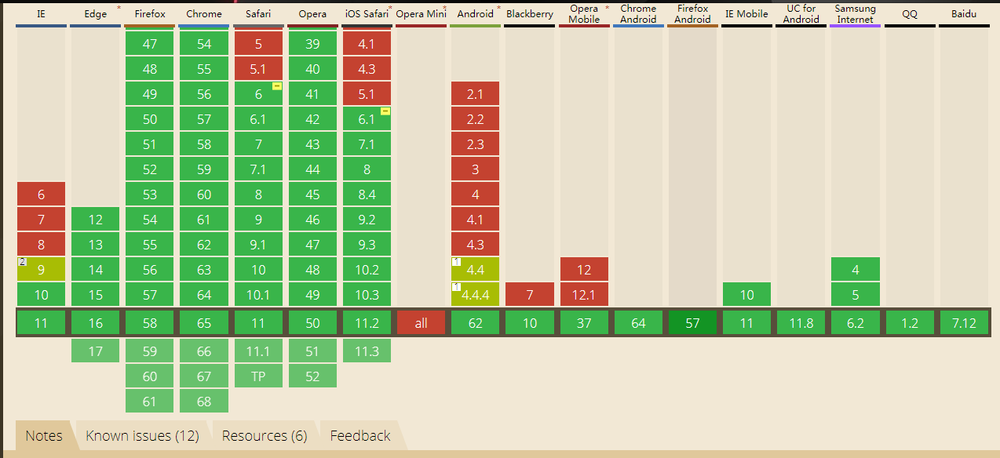

calc是英文单词calculate(计算)的缩写，css3 新增的一个函数取值，用于动态计算长度值，你可以使用calc()给元素的border、margin、pading、font-size和width等属性设置动态值，calc()可以使用数学运算中的简单加（+）、减（-）、乘（*）和除（/）来解决问题，而且还可以根据单位如px,em,rem和百分比来转化计算。
calc()函数支持 +, -, *, / 运算，可以单一单位 或者 混合单位使用。
例如：
div{
}
注意事项：
（1）+ , - 号前后需要使用空格隔开，不可写成 calc(100%-20px)。
（2）* , / 号前后可不需要空格隔开。
（3）在less中使用需要在参数外面加上: ~("expression")，如：
.div {
}

基本上主流浏览器都支持了，大好河山一片绿，基本上可以放心大胆的使用了。